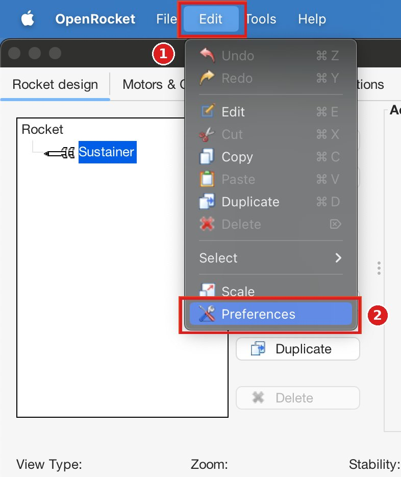
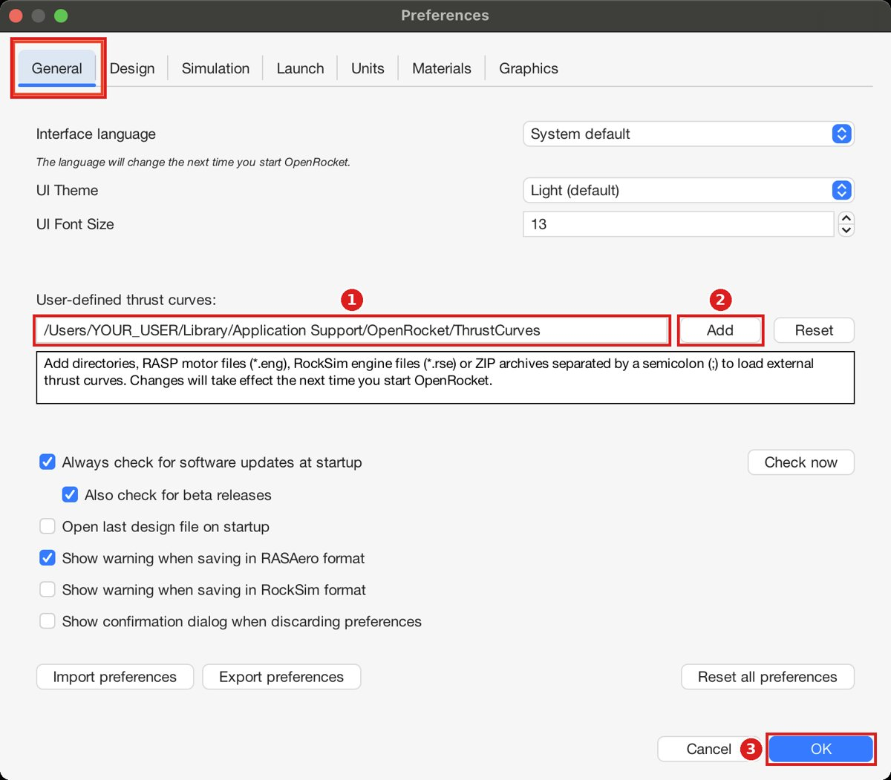
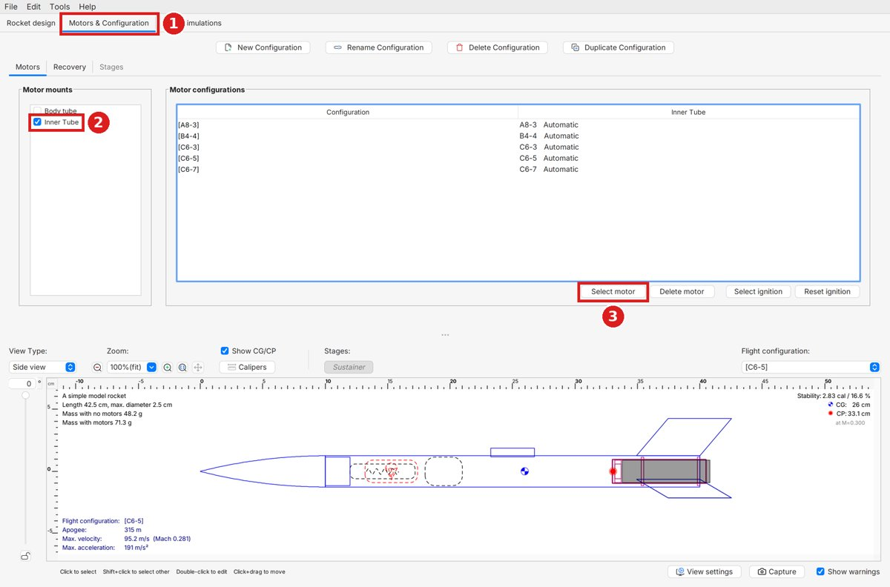
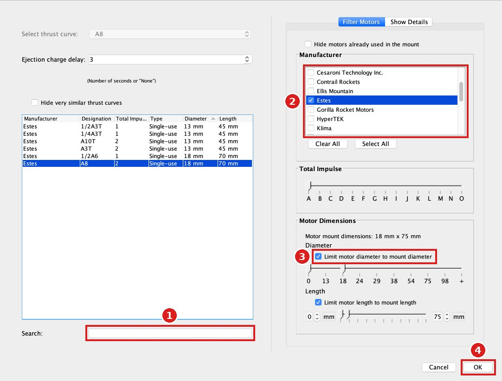

TEKNOFEST 2026 Roket Yarışması'nın motorları OpenRocket'ın hazır kütüphanesinde yok. Yarışma komitesinin yayımladığı resmi motor dosyalarını (.eng) bir kez programa tanıtmanız gerekiyor. İşlem yaklaşık 10 dakika sürer.
TEKNOFEST Motorları 2026L1256 · M1850 · N3300 .eng dosyalarıİndir1. Dosyaları sabit bir klasöre koyun
Paketi indirip açın ve üç .eng dosyasını kalıcı bir klasöre koyun (örneğin Belgeler/OpenRocket_Motorlar). Klasörü sonradan taşımayın; OpenRocket motorları her açılışta buradan okur.
2. Klasörü OpenRocket'a tanıtın
Edit → Preferences menüsünü açın.

General sekmesinde User-defined thrust curves satırının yanındaki Add düğmesine basıp klasörünüzü seçin, ardından OK deyin.

3. Programı yeniden başlatın
OpenRocket'ı tamamen kapatıp yeniden açın. Motor ayarı ancak program yeniden başlayınca devreye girer. Motorlar yine görünmezse bilgisayarı yeniden başlatın.
4. Motoru tasarıma ekleyin
Tasarımınızda Motors & Configuration sekmesine geçin, motor yuvasını işaretleyin ve Select motor'a basın.

Arama kutusuna Teknofest26 yazın. Motor listede yoksa Limit motor diameter to mount diameter işaretini kaldırın; TEKNOFEST motorları 75 ve 98 mm çaplıdır.

5. Kaydedin ve kontrol edin
Tasarımı kaydedin, programı kapatıp yeniden açın ve motorun seçili kaldığını görün. Simülasyonu çalıştırdığınızda irtifa ve hız değerleri geliyorsa işlem tamam.
Kaynaklar: TEKNOFEST Roket Yarışması dokümanları · OpenRocket dokümantasyonu. Ekran görüntüleri OpenRocket resmi dokümantasyonundandır.